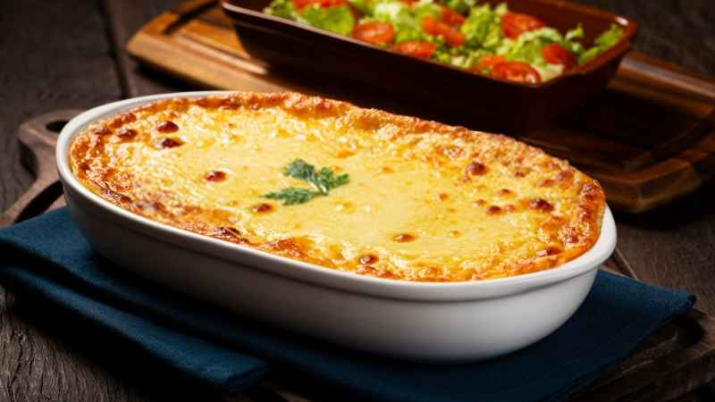
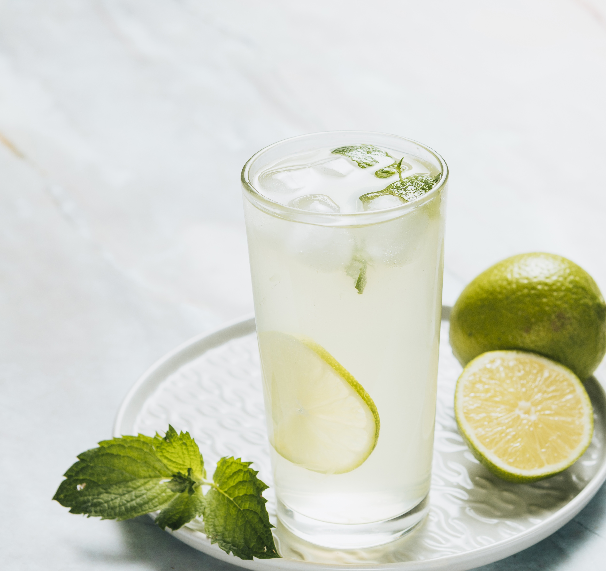
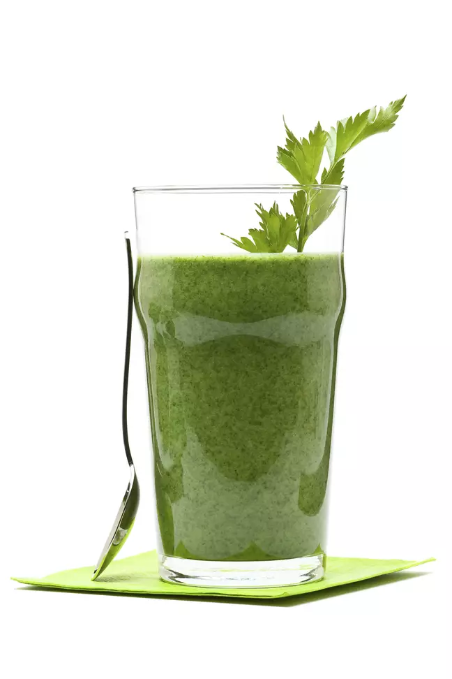

Encelenterepositor de energias, aconselhado como refeição durante o dia paraos atletas profissionais

Delicioso prato a base de carne de sol, creme de leite, requeijão e mandioca.

Prato a moda italiana, refeição rápida e saborosa, disponível nos melhores estabelecimentos do Brasil.

Para os vegetarianos de plantão, esta salada com carne de soja e brócolis alimenta seu corpo sem agredir

Bebida a base goiaba

Refrescante e hidratante, tome após os exercícios, mais cuidado com o sol, pois o limão procova queimaduras na pele

Bebida energética a base de açaí para os atletas de fim de semana que não podem tomar uma tigela de açaí puro.

Para os admiradores dos alimentos naturais e comida vegan, divirtam-se descobrindo os mistérios desta bebida.